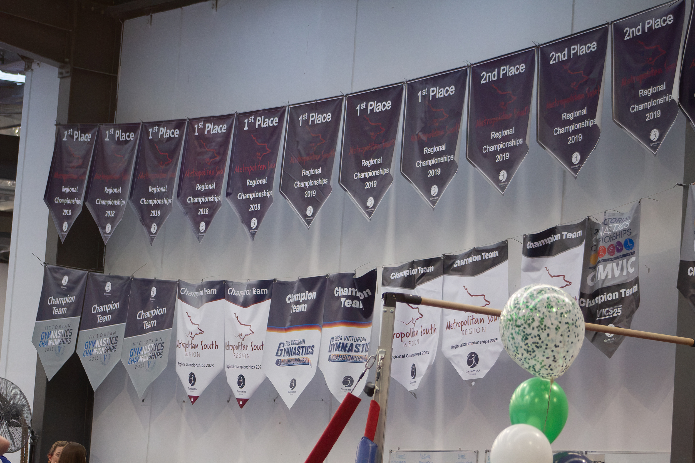
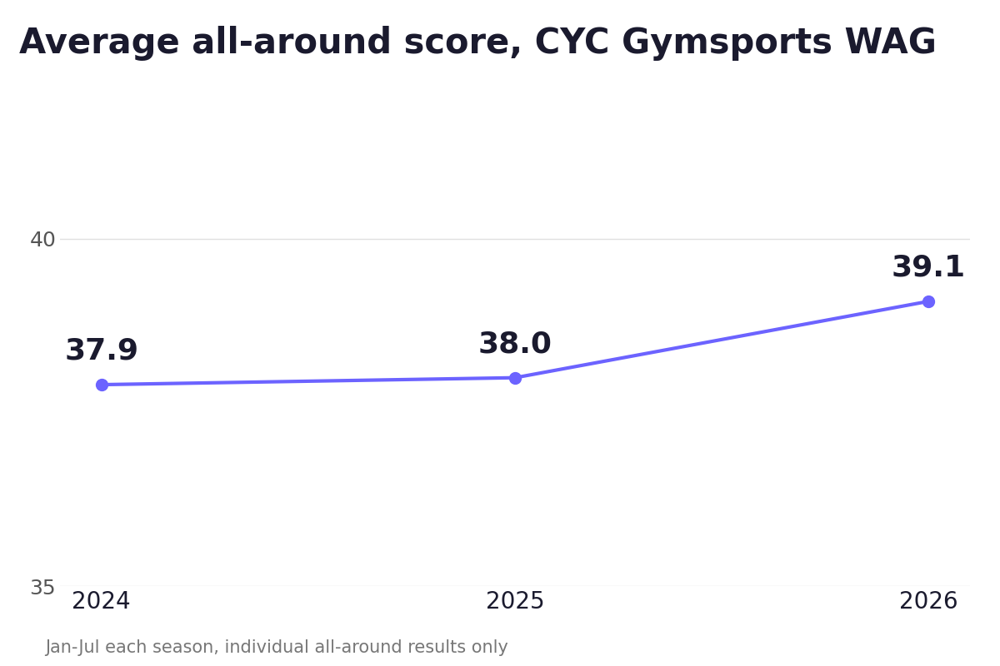
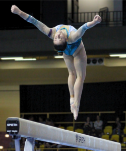
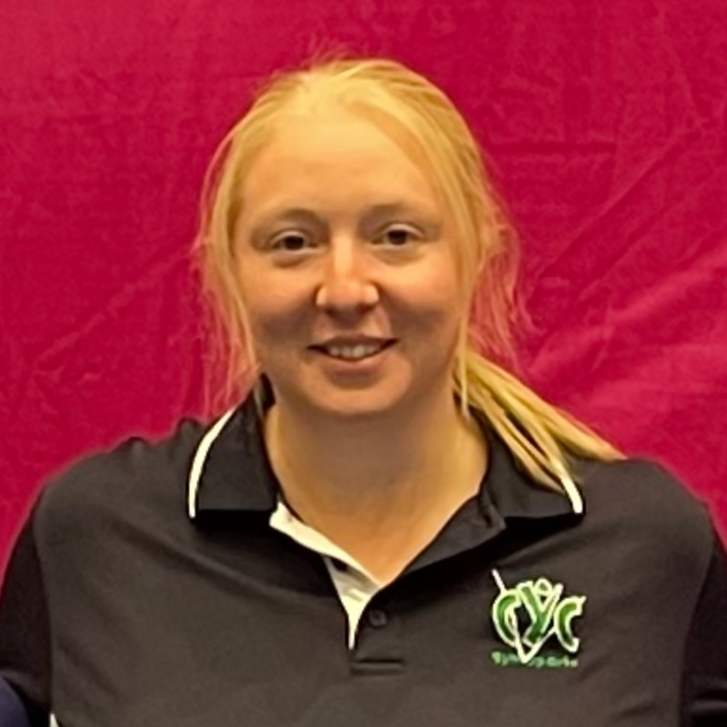

Inside CYC Gymsports: Seventy Years, A Pipeline to the National Squads, and a Club That Outgrew Its Own Name
Founded in a Cheltenham hall in 1956 and now training from Braeside, CYC Gymsports marks its 70th year with a rising average score, a clear edge on bars, and athletes on Victoria's 2026 WAG State Team, including its Level 10 and International squads
TL;DR
CYC Gymsports, known for most of its history as Cheltenham Youth Club, was founded by Barbara Cunningham in a Cheltenham hall in 1956, right after that year's Melbourne Olympics, and once housed Victoria's elite gymnastics program before the High Performance Centre moved to Prahran. The club has since relocated to Braeside, and 2026 marks its 70th year. In my database, 82 WAG athletes compete under the CYC banner, with 25 medals at Level 8 and above across the last three seasons. Bars is comfortably the club's strongest apparatus relative to the field, and its average individual all-around score has risen every season since 2024. CYC athletes were also named to Victoria's 2026 WAG State Team, including its Level 10 and International squads, a spread that goes well beyond what its entry on our state-team leaderboard suggests at first glance.
Last time, I profiled Chamford Gymnastics Club, a Murrumbeena club that's stayed in the same suburb for forty-four years. CYC Gymsports runs almost the opposite way: a club that's changed venues more than once and now trains a fair distance from the suburb in its own name. One note before I get into it: a separate write-up of the CYC Junior Invitational itself is on the way, I'm still working through the results.
Seventy years, one name, two suburbs

Champion Team and regional championship banners at CYC's Braeside home.
Per the club's own history page, CYC was founded by Barbara Cunningham in a hall in Cheltenham in 1956, in the immediate aftermath of that year's Melbourne Olympic Games. The club then operated out of a number of venues over the years before settling at its current site, 126-130 Woodlands Drive in Braeside, where it's been ever since. It's actually something I've noticed doing this series of profiles: a lot of clubs are named after their suburb of origin but aren't actually in that suburb anymore. I could probably draw some parallel to football clubs relocating, but I know nothing about football, so let's just move on. For part of that history, CYC's own site describes the club as having been "the original home of Victoria's elite gym sports program," before Gymnastics Victoria's High Performance Centre relocated to Prahran. Today the not-for-profit, volunteer-governed club runs Junior, Recreational, Competitive (WAG, Trampolining, Gymstar), Inclusive, and Adult and Teen programs for around 1,000 registered athletes and more than 40 coaches. 2026 is its 70th year.
What the numbers say

CYC's average individual all-around score has climbed every season since 2024 (Jan-Jul comparison each year).
Eighty-two WAG athletes appear in my database for CYC, with 486 individual results across 30 competitions spanning the 2024, 2025, and 2026 seasons. At Level 8 and above, the club has accumulated 25 medals: 11 gold, 9 silver, and 5 bronze. Bars stands out as CYC's clearest strength relative to the field, its athletes outscoring the field average there by a wider margin than on any other apparatus. The club's average individual all-around score has also risen every season, from 37.9 in the first seven months of 2024 to 38.0 over the same window in 2025 to 39.1 this year. That figure blends compulsory-level scoring (Levels 5-6, capped closer to 40) with the open-ended optional scoring of Level 7 and above, so it isn't a strict apples-to-apples number, but I still read it as a fair signal of the club's trajectory: a rising average here partly reflects more CYC athletes progressing into those higher, optional levels, which is itself a sign of a strengthening program. The podium rate points the same way by 2026: 18.3% of CYC's individual all-around results finished top three in that window in 2024, dipping to 15.5% in 2025, before climbing to 23.7% this year. With under 130 individual results in any of those three windows, that's a small enough sample that it could easily be a quirk of the data, but both measures land in the same place: up.
A club that produces national-level gymnasts

Kate McDonald, Commonwealth gold medallist and Olympian, on beam.
When Gymnastics Victoria named its 2026 WAG State Team and Queensland Border Challenge squads, I went through the announcement athlete by athlete. CYC featured there, and its presence on the State Team runs deeper still: the club also has athletes in the Level 10 and International squads, final places in which weren't locked in until after training camp, a spread that points to a program producing gymnasts capable of representing the state at every level.
Zali Goulding earned the club's State Team spot in Level 9 Open, backing up a 13.0 vault, the second-best of the field at Trial 1, with a 5th-place finish there and 10th at Senior Vics. Ruby Nguyen and Lily Fletcher each made the Border Challenge squad, at Level 8 and Level 9 respectively, with Fletcher's 6th at Senior Vics (47.032) the standout scoreline of the pair. Kate McDonald was one of only two athletes named to the Senior International Squad from outside Waverley Gymnastics Centre, and Megan Kohler joined the Developing International Squad.
Depth in the Level 10 Squad, and the club's top score of the year
The clearest sign of that depth is the Level 10 Squad, where CYC has multiple athletes named: Maddie Smith, Jaella Koski, and Zoe Rewell among them. More than one athlete from the same club named to that national-pathway squad is a notable result on its own, and Smith backed it up on the scoreboard: her 51.365 is the highest individual all-around score by any CYC athlete, Junior or Senior, in my database this year. On the Junior side, Anastacia Katrich posted a 45.5 at the CYC Junior Invitational, the club's best 2026 score below Senior level.
The view from the stands
I was at CYC myself for the first time this past weekend, there to watch my own daughter compete at the CYC Junior Invitational. A few things stood out from a parent's seat. The venue has a raised viewing area, which opens up real spectator capacity for a comp the size of the Invitational, handy when you're trying to fit a full day's worth of parents, siblings, and coaches around the floor. CYC also makes the effort to run its own small cafe on site, coffee and snacks, which might sound minor until you've done a full day of gym parenting on an empty stomach. It's never going to compete with Knox's cafe, but any comp that makes the effort gets a thumbs up from me.
Culture first, results follow
I asked CYC's Women's Artistic Gymnastics Competitive Co-ordinator, Sophie Norris, about the club's goals from here.

"Our goal is to keep building a program where every athlete feels supported, challenged and proud to be part of CYC, while also giving our coaches the opportunity to grow and develop. I'm really proud of the culture we're creating. We're not only the home of Commonwealth gold medallist and Olympian Kate McDonald, but a club where every gymnast, regardless of their level or goals, is encouraged to believe in themselves and reach their potential. For me, the future is about continuing to grow, create more opportunities and build a program that people genuinely want to be part of, while keeping the strong sense of community that makes CYC special."
Sophie Norris, Women's Artistic Gymnastics Competitive Co-ordinator, CYC Gymsports
CYC has also been one of the more helpful clubs behind the scenes since I started this site, open with feedback and easy to approach for information, and pieces like this one are easier to get right because of it. This is also the last Club Profile in the run I set out to write when this series started. Twelve clubs in, from Waverley through to CYC, it's been a genuinely worthwhile way to look past the results tables and into what's actually happening at each of these programs. CYC closes it out fittingly: seventy years old, still operating under a suburb it left behind, and still adding to its results sheet.
About the Author
David "Tonko" Tonkin
Founder, Stick The Landing · Gymnastics Dad
David Tonkin ("Tonko" to those who've known him long enough) is a former MAG gymnast turned Ballroom Dancer turned Gymnastics Dad. Gymnastics runs in the family: his mother coached and judged the sport, and his sister was a Rhythmic Gymnastics Australian Champion. Today his own daughter trains close to twenty hours a week in competitive WAG. He built Stick The Landing to give the Victorian gymnastics community the results tool it deserved.